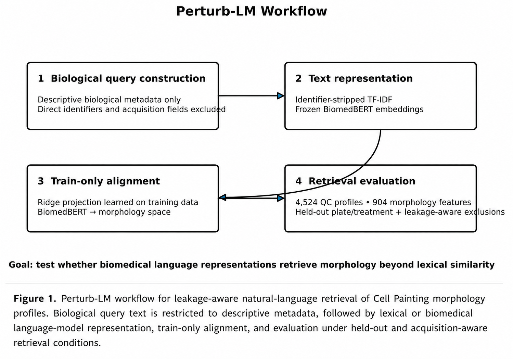
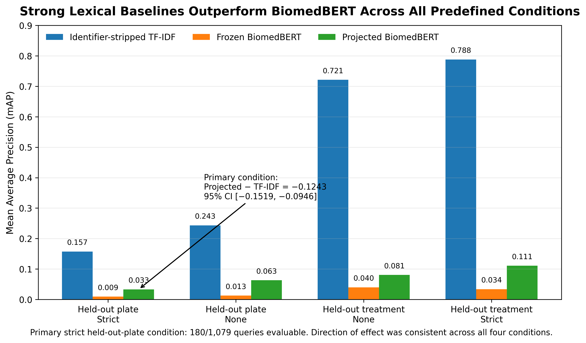
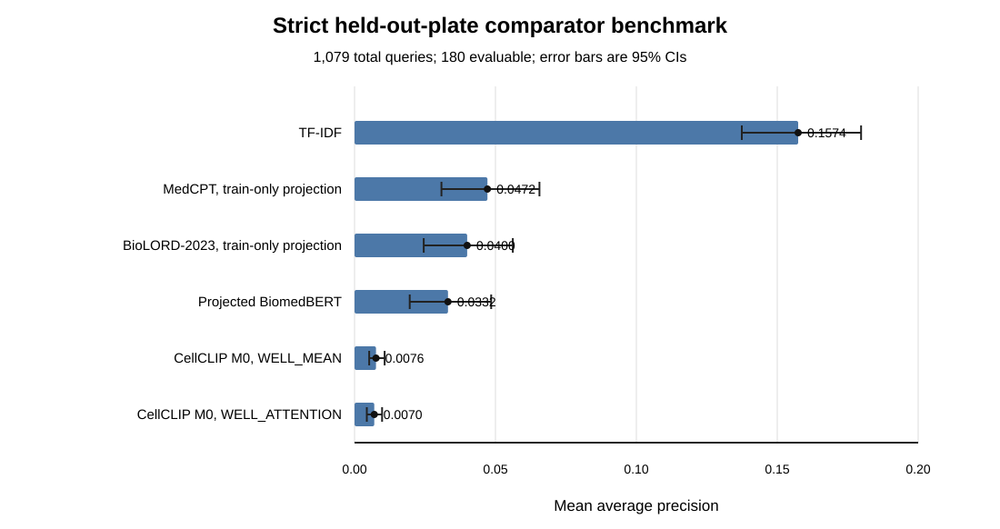

FROM PASSION PROJECT → RESEARCH BENCHMARK
Perturb-LM
Can biological language help us search cellular morphology?
Perturb-LM started with a question I couldn't stop thinking about: could biological language help us search cellular morphology? What began as a small passion project became a harder research question: not simply whether retrieval could work, but whether it worked for the right reasons.
I'm building a leakage-aware benchmark for natural-language retrieval of Cell Painting morphology. The work now includes explicit information boundaries, held-out evaluation, comparator models, uncertainty analysis, reproducibility documentation, a collaborator workflow, public research artifacts, and conference acceptances.
Project evolution / six steps
- 01 · QUESTION
Can biological language retrieve meaningful cellular morphology?
- 02 · EARLY PROTOTYPE
Text-to-morphology retrieval experiments.
- 03 · HARDEN THE QUESTION
Identifier stripping, leakage controls, plate/well exclusions, held-out evaluation, and evaluability accounting.
- 04 · COMPARATOR SUITE
TF-IDF, BiomedBERT, MedCPT, BioLORD, and CellCLIP.
- 05 · REPRODUCIBILITY
Frozen benchmark definitions, metadata-role auditing, bootstrap uncertainty, versioned artifacts, and public-safe outputs.
- 06 · OUTSIDE THE REPO
NECB 2026, Central US SynBio acceptance, collaborator workflow, and ongoing manuscript / benchmark development.
From biological query to retrieval test

- 1. Biological queryDescriptive metadata only; direct identifiers and acquisition fields excluded.
- 2. Text representationIdentifier-stripped TF-IDF or frozen BiomedBERT embeddings.
- 3. Train-only alignmentA ridge projection learned on training data maps BiomedBERT to morphology space.
- 4. Retrieval evaluationHeld-out plate / treatment tests with leakage-aware exclusions. The workflow snapshot uses 904 morphology features.
Figure A / the baseline question

Figure A values / four specified conditions
| Held-out split / exclusion setting | TF-IDF | Frozen BiomedBERT | Projected BiomedBERT |
|---|---|---|---|
| Plate / strict | 0.157 | 0.009 | 0.033 |
| Plate / none | 0.243 | 0.013 | 0.063 |
| Treatment / none | 0.721 | 0.040 | 0.081 |
| Treatment / strict | 0.788 | 0.034 | 0.111 |
The figure annotates the primary projected-minus-TF-IDF difference as -0.1243, with a paired 95% CI of [-0.1519, -0.0946], also recorded in the repository's earlier abstract reconciliation. This is not the September comparator confidence-interval table.
Artifact status: this earlier four-condition figure was supplied by the author. Its secondary-condition values have not been independently reconciled to the current versioned benchmark outputs. It is retained as a dated research artifact, not promoted as the current comparator suite. The current public strict comparison follows.
September update / expanded comparator suite

Inspect the values and evaluation boundaries
| Method | mAP |
|---|---|
| Identifier-stripped TF-IDF | 0.157407 |
| MedCPT · train-only projection | 0.047166 |
| BioLORD-2023 · train-only projection | 0.039978 |
| Projected BiomedBERT | 0.033156 |
| CellCLIP M0 · WELL_MEAN | 0.007622 |
| CellCLIP M0 · WELL_ATTENTION | 0.007000 |
Same-plate and same-well candidates are excluded. This population is different from the earlier 641-query lexical benchmark. The downloadable CSV also includes three unaligned controls; this figure and table highlight six comparators.
Current boundary: the repository reports these strict results but still flags verification of the exact saved M0 query artifact as pending. These are condition-specific comparisons, not a definitive model ranking or evidence that language models understand morphology. Held-out-batch generalization remains unavailable.
A more complicated model is not automatically a better benchmark result.
// baseline choice is part of the science.
The public prototype is a synthetic interface demo and aggregate dashboard, not a live biomedical retrieval model.


{kind=link}
{kind=link}
{kind=link}
{kind=link}
{kind=link}
{kind=link}